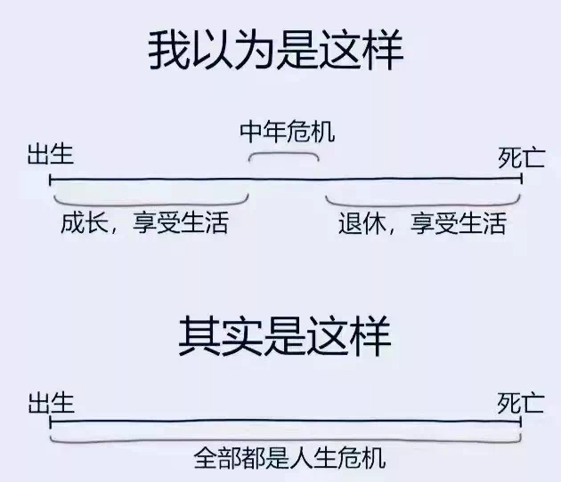
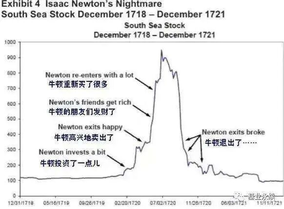
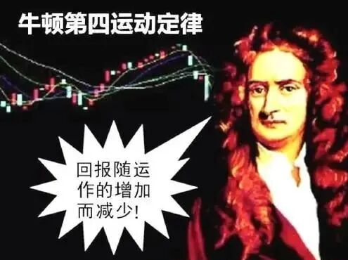

3300点后的新老股民跑路指南
上周末，我参加了一个“陆家嘴金融男团”组的饭局。所幸没有秃顶，没有AA，没有杀猪盘，没有租来的超跑和假的PP和RM腕表等令人下头的行为。当然，金融民工餐桌三件套还是有的，毕竟经济再怎么差，投资圈最基本的 table manner 伐好省特。噢！三件套当然不是指茅台、荤段子和纳斯达克敲钟这些过于浮夸和油腻的桥段；而是最经典又易操作的质朴套路 —— 豁胖、推荐股票和年轻肉体。果然我刚坐下，便听到对面号称天使投资项目已获16倍市值的小K报出一串股票代码，而他身边恰好坐着一位藤校毕业上半身却只遮住胸的95后妹纸。如此drama的一幕，让睡过头迟到的我彻底清醒了。
小K其实不小了，根据他的年龄应该叫老K，所幸其脸庞英俊，发量充沛，最难能可贵的是他爱穿潮牌，并坚信走在国际时尚前沿是撩妹的致胜法宝。为此，小K曾特意驱车十几公里，郑重其事地给好友Z先生送去一条潮裤。这种执着，其实和大部分“中年算命”的绝望主妇有异曲同工之妙，通过穿戴某些器物，以招揽源源不断的桃花，并深信不疑地推荐给身边的朋友们。

直男Z先生其实已退市，但因为裤子印有NASA新LOGO很是喜欢，当即穿上了。不过呢，若这样的投资逻辑正确，为何地产、券商、银行股领涨，而时尚品牌则在不断缩水和关店呢？我没敢问身旁的Z先生，只是默默打开同花顺输入小K的代码，发现该股二个月内已经涨了一倍！我惊讶地问：“涨成这样了还怎么买呀？”小K自信地说：“你知道为什么散户在牛市中无法赚钱吗？”我摇摇头。
“因为他们不敢追高。”我恍然大悟，原来有人可以在第一句问候环节，就结束了整个聊天。95后的妹纸还饶有趣味地和小K讨论着苏世明，我有点走神，迫不及待地想回家和利弗莫尔先生聊聊天。他苦口婆心地教导投资者：随着时间的推移，当人们在股市获得一定成功之后，经常要面对各种诱惑，容易掉以轻心，或者过于雄心勃勃。这时，想要守住盈利，必须清醒地遵循以下四个原则。
🥃
/ Chapter 6 /
人性的弱点
千万不要和行情对着干
你知道吗，2014-2015年大牛市与股灾期间，股票市场顶端0.5%的中国家庭获得收益，而底层85%的家庭损失惨重，高达2500亿人民币。别说中国韭菜了，就连人类历史上伟大的物理学家牛顿，头脑一热就把全部身家赔得精光。1720年的英国，股市大热，一片“跑步进场”的呼声，许多人借钱加杠杆炒股，跟今天的中国一模一样。科学家牛顿在实验室里坐不住了，拿出7,000英镑的血本买入一只股票，一开始很快就翻了一番，但很快遇到股灾，牛顿最终割肉20,000英镑离场。

韭菜牛顿最后感叹：I can calculate the motions of heavenly bodies, but not the madness of people

利弗莫尔就非常反对在下跌的行情下逆势加仓，若以50元价格，购买100股某股票。两三天后，股票跌到47元，失败的投资者肯定会控制不住自己的冲动，在这个价位上再买100股，将持仓成本降低到48.5元。那么一旦股票继续下跌，他有什么理由不在44元再多买100股？当然这是他肯定加倍焦虑了，因为这时他的第一个100股头寸已经损失了600元，第二个100股已经损失了300元。如果这位仁兄真的按照这个糟糕的原则投机，那么他肯定会在44元逆势加仓200股，41元400股，38元800股，35元1600股，32元3200股，29元6400股……逆势加仓策略不是真的没有可取之处，但世界上又有多少个投机者能够受得了这份刺激？虽然这种极端行情似乎出现的概率并不高，不过利弗莫尔还是强调，一个投机者要时刻警惕的就是这样的极端行情，只有这样才能避免灾难。所以，为什么错了还要把好端端的资金砸进去打水漂？留得青山在，不怕没柴烧，就算要冒风险，也应该把钱花在回报率更高的交易上，绝对好过扔在这种明显会输钱的交易上。

求财心切，想在极短时间内致富
在二三年的时间里获得500%的投资回报率已经相当不错了，但是这些人等不及，他们要在二三个月内赚到那么多钱。有一些人居然真的做到了，那么这些勇猛的交易员能够守住盈利吗？他们不能。因为这些钱“不健康”，来得太快的钱会让人失去平衡感——“如果我能够在两个月里赚到500%的收益，那么接下来两个月我要创造更大的奇迹！”如果商人开一家新店，他不会指望第一年就获得超过25%的投资回报，但对于投机行当的人来说25%的投资回报根本不能满足他们的胃口，他们追求的是至少100%的投资回报。但这种算计是错的，他们没有把投机也当做一门生意，更加没有按照生意的根本原则形式。这种投机者是永远不会满足的，也许他们能够持续赚钱，但终有一天，他们赚钱的齿轮卡住了，这种问题肯定是严重的、不可预见的和毁灭性的。也许有些人幸运地争取到多一点时间，也许他剩下一些种子资金下次从头来，但更多的人因为资金链断裂像飞蛾扑火般永远退出了市场。

把一半的盈利取出来
所以，每一个投机者都应该给自己定一个规矩：每次盈利之后，都应该把一半的盈利从账户里取出来，这是想从华尔街把钱赚走的唯一办法，多亏了这个交易原则，利弗莫尔才不止一次死里逃生。也正是因为没有完全遵循这个原则，在投资生涯中难免经历更多坎坷。对于一般投资者而言，唯一一个从自己的交易账户中把钱取出来的原因就是他准备完全清仓，或突然实现财富自由不必再炒股了。所以，他们从来见不到自己的钱，资金账户或银行账户里的钱虚拟货币，和实实在在捏在手里的钞票，两者完全不是一回事儿。只有在你手中，钱才有意义。钱只有握在手中，你才会觉得拥有它，才会在很有可能失去账面盈利的时候，不愿意冒很大风险。所以，还是请你时不时去数一下真正的钱吧，特别是你在两笔交易之间。
避免过度交易 投机时千万不能兴奋过度，不要受别人的恭维和各种诱惑影响。如果投机者足够聪明，能够分辨什么时候可以多做交易，那过度交易还不算什么问题。他可能知道在什么样的情况下他可以甚至应该过度交易，但如果他养成了过度交易的习惯，基本上就完蛋了，他们往往会失去控制，从而失去了把握平衡的感觉。他们从来不会去想，要是错了该怎么办，但那一天总归会来的。那些傻钱就像长了翅膀一样，来得快也去的快，于是又一名投机者破产了。
【持续连载，敬请期待】
智商税，其实是一种与智商高低无关的税收，有时候智商越高，缴得越多。如利弗莫尔这般的高智商投机天才，也承认：我也是人，也有人性的缺点。贪婪、恐惧、急躁、冲动、懒惰、自大、健忘等，都是人性的弱点，如影随行地陪伴我们一生，它们才是真正的对手。
嘿嘿，祝大家下个交易日里好运。

2020.07.16
——
END